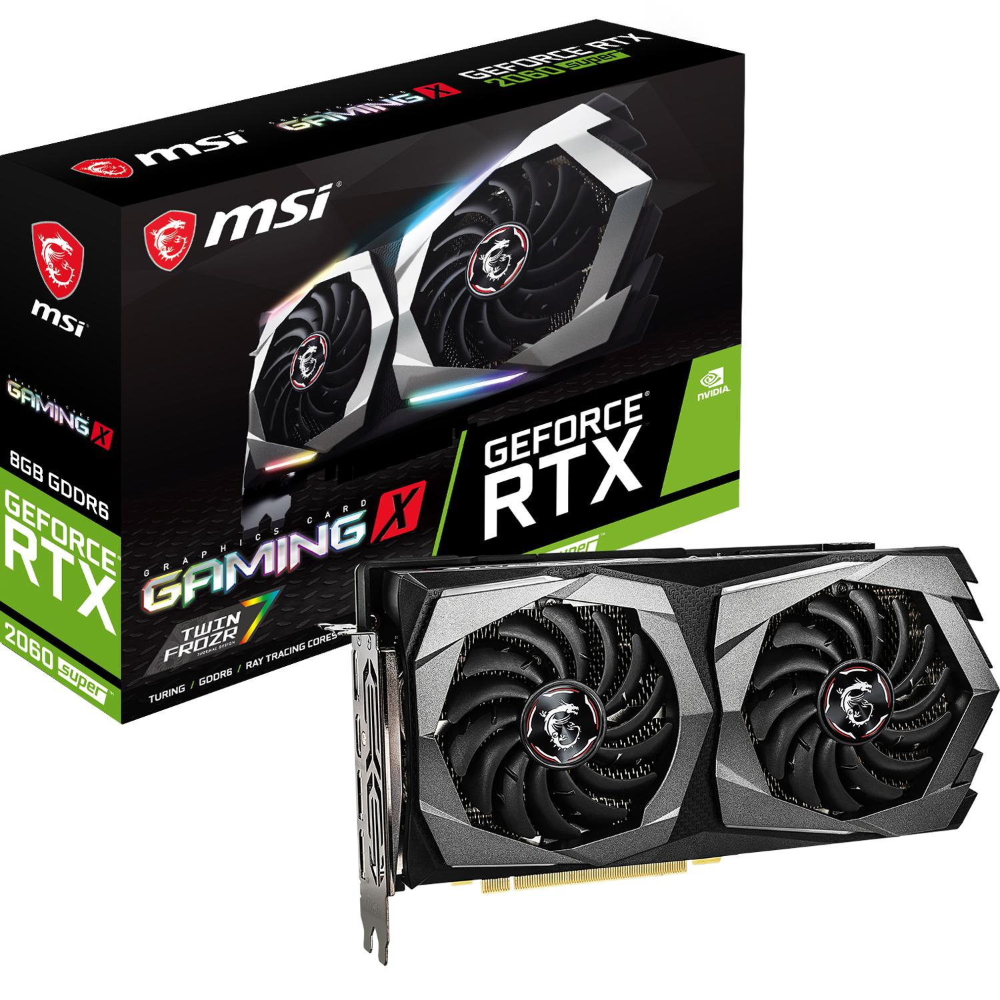
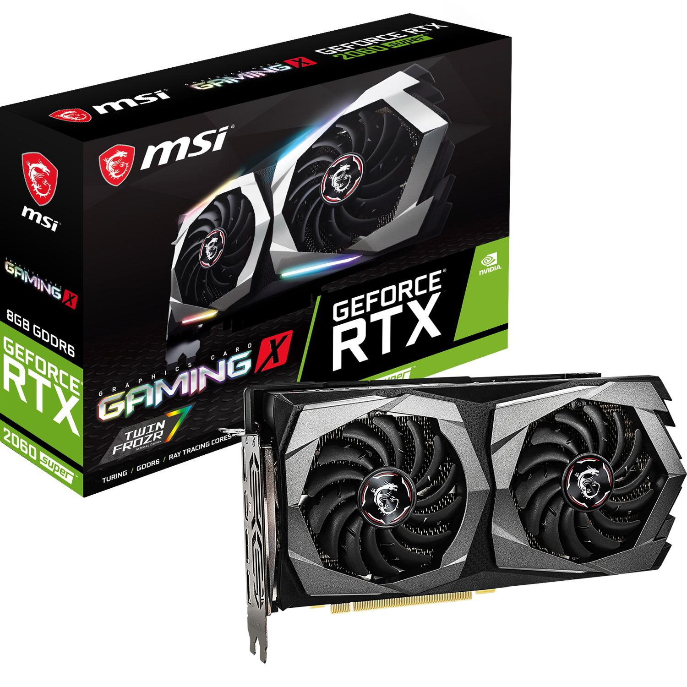

NAUJOS GRAFIKOS PLOKŠTĖS ĮDIEGIMAS! - ŽAIDIMAI(2020)
2020.10.29 12:41

žaidimai
Naujos grafikos plokštės įdiegimas!
Įvadas
Šiame patarime sužinosite, kaip pakeisti / pakeisti vaizdo plokštę.
Pradžia
Pašalinkite dabartinę vaizdo plokštę
Pašalinkite dabartinę vaizdo plokštę, eikite į: Valdymo skydas Sistema Aparatūra Įrenginių tvarkyklė Vaizdo adapteriai. Pažymėkite įrašą, atitinkantį jūsų grafikos plokštę Tada dešiniuoju pelės mygtuku spustelėkite ir pasirinkite Pašalinti . Tai pašalins visus tvarkykles ir kortelę iš jūsų kompiuteryje įdiegtos įrangos.Šis žingsnis yra prieš fizinę grafikos kortelės pašalinimą (integruotam grafiniam mikroschemų rinkiniui (IGP) vadovaukitės šio straipsnio pabaigoje pateikta procedūra). Atjunkite maitinimo šaltinį ir visus laidus, prijungtus prie galinio skydelio. Išimkite šoninę plokštę, kad pasiektumėte pagrindinę plokštę. Rekomenduojama, kad patvirtintumėte, jog nauja grafinė kortelė turi specialų maitinimo jungtį, Taip pat patikrinkite, ar maitinimo šaltinyje yra tinkamas lizdas ir reikalingi adapteriai. Išimkite varžtus, laikančius grafikos plokštę, tada stumkite arba atrakinkite užrakinimo sistemą PCI-Express arba AGP lizdo gale. Sklandžiai išimkite kortelę.
.
Naujos kortelės įdiegimas
Švelniai įdėkite kortelę į PCI Express / AGP lizdą. Kai kurie modeliai yra su 6/8 kaiščiais PCI jungtimi, sujungti juos ar kompiuterį.Atsukite varžtus ir uždarykite sistemos bloką. Prijunkite kompiuterį ir visus išorinius įrenginius.
Vairuotojų diegimas
„Windows“ aptiks naują kortelę ir paprašys jūsų vairuotojų. Spustelėkite „Atšaukti“, kol dialogo langas nustos rodyti ir pasirodo pranešimas, rodantis, kad „ įdiegimo metu įvyko problema, o įrenginys gali neveikti normaliai “. Įdėkite tvarkyklės kompaktinį diską, kuris ateina su nauja kortele, arba atsisiųskite naujausius diskus iš interneto. Nvidia tvarkyklės parsisiųsti ATi tvarkyklės parsisiųsti Pradėkite diegimo procedūrą ir vadovaukitės instrukcijomis. Baigę diegti, iš naujo paleiskite kompiuterį, net jei nėra dialogo lango.
Integruotos grafikos procedūra (IGP)
Jei jūsų kompiuteryje yra integruota grafikos plokštė, pirmiausia turite patikrinti, ar jūsų pagrindinėje plokštėje yra laisvas AGP arba PCIexpress16 lizdas, kad įdiegtumėte naują grafikos plokštę. Iš ten procedūra yra beveik tokia pati, kaip nurodyta pirmiau, bet jums nereikia išjungti vairuotojų ir, žinoma, neįmanoma pašalinti IGP. Įdiekite savo naujas grafikos plokštes ir tvarkykles tiesiogiai. Daugelis jums pasakytų, kad išjungsite integruotą grafikos plokštę BIOS, tai nėra privaloma ... daugiau sužinoti čia: Mitas - būtina išjungti integruotą grafikos mikroschemą„ Flo88 f“ arba šio patarimo dėka.
Ankstesnis Straipsnis Kitas Straipsnis
Geriausi Patarimai
Nepavyko atkurti „iPhone 4“
Kaip atkurti sustabdytą „Twitter“ paskyrą
„MacOS“ - išjungti „Time Machine“ pranešimą
Dalintis Apie Socialinius Tinklus Rekomenduojama„Windows“ neatpažįstamas „USB Flash Drive“
Įdiekite „Smartmontools“ Ubuntu
„Windows 7“ - kopijavimo / įklijavimo parinkčių įtraukimas į „ri“ meniu
Kaip padalyti daugiafunkcinius „Excel“ failus į atskirus failus?
Kategorija žaidimaiĮdomios Straipsniai
Pradedančiųjų vadovas Pokémon GO
Excel - skaičiavimas tarp laiko intervalo
Quicktime - Pridėti piktogramą sistemos dėkle
Kaip paslėpti arba ištrinti „YouTube“ kanalą
„Windows“ - Keisti valiutos formatą
© 2020 Naujos grafikos plokštės įdiegimas!- Kas yra integruota grafikos plokštė?
- Skirtumas tarp atskiros ir integruotos grafikos kortelės ...
- grafikos plokštės
- Vaizdo Plokštės GeForce, Radeon. Vaizdo Plokste Internetu ...
- NAUJOS GRAFIKOS PLOKŠTĖS ĮDIEGIMAS! - ŽAIDIMAI(2020)
- Grafikos plokštę "HD 7970: techninė harakterisitki ir ...
- Vga grafikos plokštės aprašymas - Įranga - 2020
- 10 geriausių kompiuterio grafikos plokštės 2018 m - Žmonių ...
- Kaip sužinoti, kokią grafikos plokštę turiu? („Windows 10 ...
- Grafikos kortelių reitingas - palyginimų sąrašas 2020
- Kas yra integruota grafikos plokštė?
Papildomi būdai sužinoti, kuri grafikos plokštė naudoja „Windows“ Be jau aprašytų metodų, „Windows 10“, „8“ ir „Windows 7“ yra papildomi sistemos įrankiai, leidžiantys gauti informaciją apie vaizdo plokštės modelį ir gamintoją, kuris kai kuriais atvejais gali būti naudingas (pvz., Jei administratoriui neleidžiama ...
- Skirtumas tarp atskiros ir integruotos grafikos kortelės ...
Pavyzdžiui, integruota "Intel" grafikos plokštė sunaudoja ne daugiau kaip 15 vatų. Todėl temperatūros režimas yra švelnesnis - galite sumažinti triukšmingų ventiliatorių skaičių sistemos vienete. Trečia, linijų skaičius ir ilgis mažėjaSistemos autobusas naudojamas bendrauti su kortele, todėl galite gauti aiškesnį vaizdą ...
- grafikos plokštės
Žinant, kokią grafinę plokštę turite kompiuteryje su „Windows 10“, labai svarbu, nes per šią informaciją galite atsisiųsti, įdiegti ir atnaujinti reikalingus tvarkykles. Grafinė kortelė, vaizdo plokštė arba vaizdo plokštė yra pagrindinė ir esminė kompiuterio sudedamoji dalis, nes ji yra atsakinga už visų kompiuterio ir visų jį valdančių programų grafinių (ty ...
- Vaizdo Plokštės GeForce, Radeon. Vaizdo Plokste Internetu ...
Norint pakeisti grafikos plokštę, pirmiausia reikės atidaryti kompiuterio dėžę, išimti senąją ir įdėti naują plokštę. Tačiau prieš įsigyjant naują techninę įrangą labai svarbu žinoti, ar Tavo kompiuteryje yra naudojama „PCI Express“ grafikos plokštė, ar senesnė AGP.
- NAUJOS GRAFIKOS PLOKŠTĖS ĮDIEGIMAS! - ŽAIDIMAI(2020)
Kokia žaidimų vaizdo plokštė? Gera vaizdo plokštė 616 peržiūros Patugali atsakė į klausimą Birželio 24 2020 Pramogos ir laisvas laikas žaisti žaidimų kortelė Grafika kortelė grafikos plokštės kompiuterio surinkimas
- Grafikos plokštę "HD 7970: techninė harakterisitki ir ...
PC grafikos kortelės; Grafikos kortelių reitingas. Grafikas, kuriame lyginamos geriausių kompiuterio grafikos plokščių charakteristikos. Naujausia „Gforce“, „RX Radeon GPU“ greitis, palyginti su reitingu. Sužinokite, kuri darbalaukio vaizdo plokštė yra greičiausia. 2020-01-31
- Vga grafikos plokštės aprašymas - Įranga - 2020
HD vaizdo plokštė 7970 GHz Edition "buvo parduoti forma distiliuoto nuo: grafikos branduolys veikia esant 1050 MHz dažniu, o vaizdo atmintis 1500 MHz (6000 MHz). Verta pažymėti, kad gamintojas yra įvesta daugiau jokių pokyčių: tikimasi padidinti pajėgumus daugiau nei 384 bitai, ir padidinti atminties talpą iki 6 GB atsitiko.
- 10 geriausių kompiuterio grafikos plokštės 2018 m - Žmonių ...
Specialiosios ir integruotos grafikos kortelės yra dviejų tipų grafikos plokštės. Pagrindinis skirtumas tarp dviejų yra tas, kad integruota grafikos plokštė yra įmontuota į kompiuterį. Kadangi speciali grafinė plokštė yra išorinis priedas, kuris turi būti prijungtas prie pagrindinės plokštės.
- Kaip sužinoti, kokią grafikos plokštę turiu? („Windows 10 ...
Gigabyte GeForce GTX 1050 2GB grafinė plokštė 4, 4 žvaigždutės, 907 atsiliepimai "Tai buvo mano pirmoji grafikos plokštė kada nors, ir nuoširdžiai, kad žaidimų, kuriuos galiu žaisti tokioje spalvingoje kokybėje, skaičius mane visiškai gąsdina.
- Grafikos kortelių reitingas - palyginimų sąrašas 2020
Pradinio lygio vaizdo plokštė su geromis techninėmis specifikacijomis ir labai demokratiškomis sąnaudomis yra NVidia GeForce GT 610. Šio gaminio, jo parametrų ir galimybių ypatumai bus išsamiau nagrinėjami.
Papildomi būdai sužinoti, kuri grafikos plokštė naudoja „Windows“ Be jau aprašytų metodų, „Windows 10“, „8“ ir „Windows 7“ yra papildomi sistemos įrankiai, leidžiantys gauti informaciją apie vaizdo plokštės modelį ir gamintoją, kuris kai kuriais atvejais gali būti naudingas (pvz., Jei administratoriui neleidžiama ...
Pavyzdžiui, integruota "Intel" grafikos plokštė sunaudoja ne daugiau kaip 15 vatų. Todėl temperatūros režimas yra švelnesnis - galite sumažinti triukšmingų ventiliatorių skaičių sistemos vienete. Trečia, linijų skaičius ir ilgis mažėjaSistemos autobusas naudojamas bendrauti su kortele, todėl galite gauti aiškesnį vaizdą ...
Žinant, kokią grafinę plokštę turite kompiuteryje su „Windows 10“, labai svarbu, nes per šią informaciją galite atsisiųsti, įdiegti ir atnaujinti reikalingus tvarkykles. Grafinė kortelė, vaizdo plokštė arba vaizdo plokštė yra pagrindinė ir esminė kompiuterio sudedamoji dalis, nes ji yra atsakinga už visų kompiuterio ir visų jį valdančių programų grafinių (ty ...
Norint pakeisti grafikos plokštę, pirmiausia reikės atidaryti kompiuterio dėžę, išimti senąją ir įdėti naują plokštę. Tačiau prieš įsigyjant naują techninę įrangą labai svarbu žinoti, ar Tavo kompiuteryje yra naudojama „PCI Express“ grafikos plokštė, ar senesnė AGP.
Kokia žaidimų vaizdo plokštė? Gera vaizdo plokštė 616 peržiūros Patugali atsakė į klausimą Birželio 24 2020 Pramogos ir laisvas laikas žaisti žaidimų kortelė Grafika kortelė grafikos plokštės kompiuterio surinkimas
PC grafikos kortelės; Grafikos kortelių reitingas. Grafikas, kuriame lyginamos geriausių kompiuterio grafikos plokščių charakteristikos. Naujausia „Gforce“, „RX Radeon GPU“ greitis, palyginti su reitingu. Sužinokite, kuri darbalaukio vaizdo plokštė yra greičiausia. 2020-01-31
HD vaizdo plokštė 7970 GHz Edition "buvo parduoti forma distiliuoto nuo: grafikos branduolys veikia esant 1050 MHz dažniu, o vaizdo atmintis 1500 MHz (6000 MHz). Verta pažymėti, kad gamintojas yra įvesta daugiau jokių pokyčių: tikimasi padidinti pajėgumus daugiau nei 384 bitai, ir padidinti atminties talpą iki 6 GB atsitiko.
Specialiosios ir integruotos grafikos kortelės yra dviejų tipų grafikos plokštės. Pagrindinis skirtumas tarp dviejų yra tas, kad integruota grafikos plokštė yra įmontuota į kompiuterį. Kadangi speciali grafinė plokštė yra išorinis priedas, kuris turi būti prijungtas prie pagrindinės plokštės.
Gigabyte GeForce GTX 1050 2GB grafinė plokštė 4, 4 žvaigždutės, 907 atsiliepimai "Tai buvo mano pirmoji grafikos plokštė kada nors, ir nuoširdžiai, kad žaidimų, kuriuos galiu žaisti tokioje spalvingoje kokybėje, skaičius mane visiškai gąsdina.
Pradinio lygio vaizdo plokštė su geromis techninėmis specifikacijomis ir labai demokratiškomis sąnaudomis yra NVidia GeForce GT 610. Šio gaminio, jo parametrų ir galimybių ypatumai bus išsamiau nagrinėjami.
 
